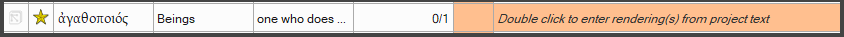
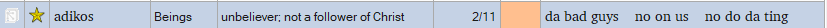
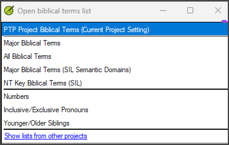

Lesson 2: Wordlist and Biblical Terms¶
Estimated time: 30 minutes
Purpose: Support a team through two check areas: the wordlist (spelling) and the Biblical Terms tool. Each one can look finished when it is not. You learn to spot this and coach the team to a real fix, without touching their keyboard.
Learning objectives¶
You will be able to:
- Recognize that Paratext cannot show whether a wordlist was blanket-approved, and ask the team directly.
- Coach the team to reset the whole wordlist to Undecided when there is doubt, and review it again together.
You will be able to:
- Recognize an unfinished Biblical Terms list: blank renderings presented as done, or old and duplicate renderings that were never cleaned up.
- Coach the team to complete and clean up the Biblical Terms list.
- Diagnose a Project Biblical Terms list that is too big and slows Send/Receive or performance, and advise the team on right-sizing it.
Connect¶
✏️ Reflection: A project's wordlist can hold tens of thousands of words. Imagine you are the translator, after weeks of drafting. What would tempt you to mark every word "correct" and move on? This is not laziness. It is tiredness. This lesson helps you spot it and handle it with the team.
Content¶
Wordlist: a clean list may not be a checked list¶
Every word in the wordlist has one of three spelling statuses: Correct, Incorrect or Undecided.
This problem is real. In one field case, a wordlist of thousands of words was blanket-approved. Every word was marked Correct, but nobody really reviewed them. Words can also stay Undecided and never be followed up. That gives the same false picture of a finished list.
WARNING: Paratext has no technical way to detect a blanket-approved wordlist. The tool does not show whether a word was reviewed on its own or approved with many others at once. The Project Plan only shows a count of words marked Incorrect. It does not count Undecided words, and it cannot show bulk approval. So zero Incorrect words in the Project Plan proves nothing.
What to do about the wordlist¶
- Ask the team directly. Did they review the words one by one, or approve them in bulk?
- If there is any doubt, reset the entire wordlist to Undecided. Reset the whole list, not only the words that look suspect. This loses nothing. The words and their spelling data stay the same. Only the approval status resets.
- Review the list again with the team. Explain why each flagged word was raised. Pay special attention to words that are split or joined incorrectly. These are common in a mass-approved list.
- Let the translator do the work. You explain and coach. The translator reviews and corrects each word.
Biblical Terms: blank renderings¶
Every term in the Biblical Terms tool starts with a gloss and a blank rendering. The gloss is in English, or in the source language of a localized version. The blank rendering is highlighted (for example, in orange). It shows the text "Double click to enter rendering(s) from project text."
This is not a bug. It is the tool's normal starting state. The team's task is simple: work through the list and add a rendering for each term from their own project text.

A term still at its default, unfilled state — not an error, just unfinished.
The risk is that a team presents a partly-done list as "done". This is a false-clean result. Do not just look over the list. Check the Found column on each row, for example "2/2" found, against a row that is still blank.
- Diagnose: Open the list and check the Found count row by row. Do not trust a general "we did the Biblical Terms".
- Coach: The team fills in the remaining blank rows themselves, from their own project text.
Biblical Terms: old and duplicate renderings¶
A term can collect several renderings over time. Many of them may no longer be found in the current text. For example, the team adds a correct rendering later, but never deletes the old one. The old one may be wrong. This clutters the list. It becomes hard to tell which rendering the team means to use now.

Renderings pile up over time — the Found column tells you which one is actually live.
- Diagnose: Look for terms with several renderings. Use the Found count to see which ones are still in the text and which are old leftovers.
- Coach: The team reviews all the renderings for the term. They confirm which ones are current and correct. By this stage every context has been translated. So a rendering that is not found anywhere in the text is an old leftover. They remove those themselves.
NOTE: A less common pattern is a rendering that is only the first word of the verse, repeated across a term's occurrences. A support.bible programmer says the likely cause is Paratext's Guess Renderings feature. The team probably ran it before the project had enough translated text. With too little data, it can guess the verse's first word as the rendering. This happens automatically, so the translator may not notice it. Do not start your check with this pattern. But if you see it, this is the likely cause.
TIP: To find this pattern quickly, open a term's occurrences. Step through them with the down arrow. You do not need to read each one closely. A rendering that is just the verse's first word stands out when you move through the list quickly.
Biblical Terms: project list size¶
In one field case, a consultant added the entire "All Biblical Terms" list into the Project Biblical Terms list. This is different from selecting a list to view it. Adding puts every term into the project itself.
Paratext's help describes the two lists like this:
- All Biblical Terms lists every Greek, Hebrew and Aramaic term that occurs 500 times or less in the original text. This can be tens of thousands of entries, depending on the project's scope. The SME has seen a whole-Bible project where this list had about 20,000 entries.
- Major Biblical Terms is a curated subset of just over 8,500 terms, organized into semantic domains.
So adding the whole "All" list loads tens of thousands of entries, not a few thousand. This makes the project bigger and slows Send/Receive and performance. The slowdown comes from adding the terms to the project list. It does not come from viewing a large list.
It was hard to convince the team of this cause. A non-technical team does not easily connect "we added a big list of terms" with "Send/Receive is now slow". The size of the list is not easy to see from inside the tool.
- Diagnose: Check whether the Project Biblical Terms list has grown far beyond the terms the project actually uses.
- Advise: Help the team right-size it. The project list should hold the terms relevant to their translation, not the full reference list.
Biblical Terms: several separate lists¶
The Open Biblical Terms List dialog holds several separate lists. They include:
- Major Biblical Terms
- All Biblical Terms
- NT Key Biblical Terms
- Inclusive/Exclusive Pronouns
- Younger/Older Siblings, and others.
Numbers is another separate entry there (see Lesson 4). There is no Measures list. A new combined list for numbers, weights and measures is replacing the older Numbers list. Not every team's Paratext version will have it at the same time. So do not assume that every project's lists look the same, or behave the same way.

Numbers is its own entry here, separate from the other lists.
Key takeaways
- Paratext cannot detect a blanket-approved wordlist. The Project Plan counts only Incorrect words. Ask the team directly. If there is doubt, reset the whole wordlist to Undecided (this loses nothing) and review it again together.
- Blank renderings are the normal starting state in Biblical Terms, not a bug. Check the Found column row by row to confirm the list is really complete.
- Old and duplicate renderings pile up. Coach the team to remove the ones no longer found in the text.
- Adding a huge list to the Project Biblical Terms slows Send/Receive. Help the team right-size it.
- You diagnose and coach. The team makes the fixes. You never touch their keyboard.
Challenge¶
✏️ Try this: Four short exercises on this lesson. Try each one without looking back. Then check your answers against the Content section above.
- Why zero is not enough. Name the three spelling statuses a word can have. Then write one or two sentences: why does a Project Plan with zero Incorrect words not prove that the team reviewed the wordlist?
- Sort two rows. For each row, write what it tells you and what you check to confirm it.
- Row A has a highlighted rendering with the text "Double click to enter rendering(s) from project text."
- Row B has five renderings on one term. Most of them are no longer found in the text.
Then say which row is the tool's normal starting state, and which shows something that needs cleaning up. 3. Find the column. Open the Biblical Terms list in a project you support. Pick one row. Look at its Found count and its rendering(s). Write which state the row is in: blank default, one current rendering, or several renderings to review. One row is enough. 4. Explain it to the team. A team says, "We only opened the All Biblical Terms list. Why is Send/Receive slow?" Write two or three sentences you could say to them. Explain the difference between selecting a list to view it and adding it to the project. Use the list sizes from this lesson.
Change¶
✏️ Reflection: Which check area is more likely to come up with a team you support now: the wordlist or Biblical Terms? Why?
Next step: The next time you look at a wordlist or Biblical Terms status with a team, ask how the approvals happened. Do not look only at what the status shows now.
Coming up: Lesson 3 covers parallel passages. Your job there is to confirm the check ran against the team's own agreed approach. Then you route what it finds back to the team. You do not judge the language yourself.